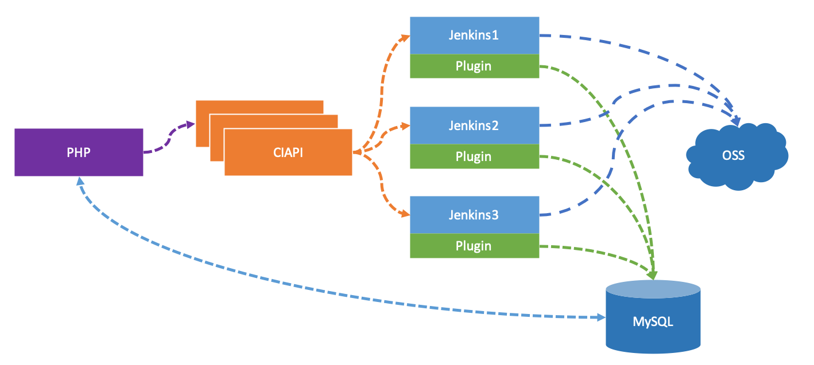

- 00 开篇词 从默默无闻到风靡全球，DevOps究竟有什么魔力？.md.html
- 01 DevOps的“定义”：DevOps究竟要解决什么问题？.md.html
- 02 DevOps的价值：数字化转型时代，DevOps是必选项？.md.html
- 03 DevOps的实施：到底是工具先行还是文化先行？.md.html
- 04 DevOps的衡量：你是否找到了DevOps的实施路线图？.md.html
- 05 价值流分析：关于DevOps转型，我们应该从何处入手？.md.html
- 06 转型之路：企业实施DevOps的常见路径和问题.md.html
- 07 业务敏捷：帮助DevOps快速落地的源动力.md.html
- 08 精益看板（上）：精益驱动的敏捷开发方法.md.html
- 09 精益看板（下）：精益驱动的敏捷开发方法.md.html
- 10 配置管理：最容易被忽视的DevOps工程实践基础.md.html
- 11 分支策略：让研发高效协作的关键要素.md.html
- 12 持续集成：你说的CI和我说的CI是一回事吗？.md.html
- 13 自动化测试：DevOps的阿克琉斯之踵.md.html
- 14 内建质量：丰田和亚马逊给我们的启示.md.html
- 15 技术债务：那些不可忽视的潜在问题.md.html
- 16 环境管理：一切皆代码是一种什么样的体验？.md.html
- 17 部署管理：低风险的部署发布策略.md.html
- 18 混沌工程：软件领域的反脆弱.md.html
- 19 正向度量：如何建立完整的DevOps度量体系？.md.html
- 20 持续改进：PDCA体系和持续改进的意义.md.html
- 21 开源还是自研：企业DevOps平台建设的三个阶段.md.html
- 22 产品设计之道：DevOps产品设计的五个层次.md.html
- 23 持续交付平台：现代流水线必备的十大特征（上）.md.html
- 24 持续交付平台：现代流水线必备的十大特征（下）.md.html
- 25 让数据说话：如何建设企业级数据度量平台？.md.html
- 26 平台产品研发：三个月完成千人规模的产品要怎么做？.md.html
- 27 巨人的肩膀：那些你不能忽视的开源工具.md.html
- 28 迈向云端：云原生应用时代的平台思考.md.html
- 29 向前一步：万人规模企业的DevOps实战转型案例（上）.md.html
- 30 向前一步：万人规模企业的DevOps实战转型案例（下）.md.html
- 期中总结 3个典型问题答疑及如何高效学习 (1).md.html
- 期中总结 3个典型问题答疑及如何高效学习.md.html
- 期末总结 在云时代，如何选择一款合适的流水线工具？.md.html
- 特别放送（一）成为DevOps工程师的必备技能（上）.md.html
- 特别放送（三）学习DevOps不得不了解的经典资料.md.html
- 特别放送（二）成为DevOps工程师的必备技能（下）.md.html
- 特别放送（五）关于DevOps组织和文化的那些趣事儿.md.html
- 特别放送（四）Jenkins产品经理是如何设计产品的？.md.html
- 结束语 持续改进，成就非凡！.md.html
- 捐赠
21 开源还是自研：企业DevOps平台建设的三个阶段
你好，我是石雪峰，从今天开始，专栏正式进入了“平台工具篇”。
在这个全新的章节，我重点想讲三个方面的内容：
- 帮助你梳理企业内部DevOps平台的实施路径，理清平台建设的主体脉络；
- 给你分享一些核心平台的建设经验，这些经验都来自于生产一线；
- 给你分析一下DevOps平台的发展方向和热门趋势，让你在进行平台建设时，能够跟上潮流。
我想跟你说的是，没有人天生就是DevOps平台的产品经理，但每一个人都能成为DevOps平台的产品经理。
因为，DevOps平台的产品与业务方向的产品不同，它要解决的就是一线研发交付团队的实际问题。
普通的产品经理没有研发交付的背景，很难理解研发交付的困境，而研发交付团队又缺少产品经理的技能和思路。所以，这个领域的人才少之又少，基本只能靠内部培养，我希望你能通过专栏的学习，摸索出一些产品设计的门道。
好了，今天，我们就来聊一聊企业DevOps平台建设的话题。
就像我之前提到的那样，在企业内部推行DevOps，工具不是万能的，但是没有工具，却是万万不能的。
当企业决定引入DevOps工具的时候，无外乎有三种选择：直接使用开源工具；采购商业工具；自己研发工具。
你可能会说，如果有能力，当然是选自研工具啊，自主可控，又有核心竞争力。可是，在DevOps状态报告中，却有一些不同的发现。
那些倾向于使用完全自建工具的企业，效能水平往往不高。所谓的完全自建工具，是指不依赖于开源解决方案，整个工具完全由自己来实现。而那些大部分采用开源工具的企业，效能水平反而不差。
这就有点反常理了。企业花了这么大的时间和精力来建设内部工具，到最后却没有达到预期的效果，究竟是为什么呢？
在我看来，这是因为没有找到企业内部平台建设的正确路径。我们要在正确的时候，做正确的事情，太超前，或者太落后，都是会有问题的。
那么，接下来，我就跟你聊聊企业DevOps平台建设的三个阶段。
阶段一：从无到有
在这个阶段，企业的DevOps平台建设处于刚刚起步的状态，在整个交付过程中，还有大量的本地操作和重复性的操作。
另外，企业内部一般也没有一个成体系的工具团队，来专门负责平台能力建设。
那么，对于这个阶段，我给你的建议是：引入开源工具和商业工具，快速补齐现有的能力短板。
所谓能力短板，其实就是当前交付工具链体系中缺失的部分，尤其是高频操作，或者是涉及多人协作的部分，比如，需求管理、持续集成等。
无论是开源工具，还是商业工具，基本都是比较成熟的、拿来即用的，这种“即战力”是当前企业最需要的。因为，工具的引入解决了从无到有的问题，可以直接提升单点效率。这也是在DevOps转型初期，团队的效率能够飞速提升的主要原因。
看到这里，你可能会问两个问题：“如何选择工具？”“为什么商业工具也是可选项？”
其实，这也是团队在引入工具的初期，最头疼的两个典型问题，我们一一来看下。
如何选择工具？
现在，以DevOps为名的工具太多了。想要在这么多工具中，选择一款合适的，你要怎么做呢？
有的人可能会把相关工具的功能列表拉出来，然后逐项比对，看哪个工具的功能更加强大。其实，我觉得，在从无到有的阶段，不需要这么复杂，核心原则就是选择主流工具。
主流工具就是业内大家用得比较多的，在各种分享文章里面高频出现的，使用经验一搜一大把的那种工具。我给你提供一些工具，你可以参考一下：
- 需求管理工具Jira；
- 知识管理工具Confluence；
- 版本控制系统GitLab；
- 持续集成工具Jenkins；
- 代码质量工具SonarQube；
- 构建工具Maven/Gradle；
- 制品管理Artifactory/Harbor；
- 配置管理工具Ansible；
- 配置中心Apollo；
- 测试工具RF/Selenium/Appium/Jmeter/TestNG；
- 安全合规工具BlackDuck/Fortify；
- ……
在初期，工具要解决的大多是单点问题，主流工具意味着更好的可扩展性，比如有完整的接口列表，甚至对其他工具已经内置了插件支持。
另外，很多开发实践都是基于主流工具来设计的。业内对于这些工具摸索得也比较深，有很多现成的实践经验，这些都对应了快速补齐能力短板的目标。
我之前见过一家大型金融机构，他们也在考虑将代码管理从SVN切换到Git。但是，他们选择的Git平台既不是开源的GitLab、Gerrit，也不是商业化的主流工具，而是一个听都没听过的开源工具。
这个工具的操作流程跟一般工具都不太一样，配套的评审、集成功能也都不够完善。最后，这家机构还是改用主流工具了。
为什么商业工具也是可选项？
随着开源工具的成熟和完善，越来越多的公司，甚至是传统企业，都开始积极拥抱开源，似乎开源就是代表未来的趋势。
那么，是不是只选择开源工具就行了，不用考虑商业工具了呢？我觉得，这种想法也是比较片面的。
商业工具的优势一直都存在，比如，专业性、安全性、扩展性、技术支持力度等。其实，很多开源工具都有商业版本。
比如，很多公司即便有开源的Nexus，制品管理工具Artifactory也都是标配。因为，Artifactory无论是在支持的制品类型、分布式部署、附加制品安全漏洞检查，还是在与外部工具的集成等方面，都有着明显的优势。
另外，像Jira这种需求和缺陷管理工具，与Confluence深度集成的话，足够满足绝大多数公司的需求。
再举个例子，安卓开发最常见的Gradle工具，它的商业版本可以直接让你的编译速度提升一个数量级。在最开始时，你可能觉得够用就行，但是当你开始追求极致效率的时候，这些都是核心竞争力。
选择商业工具的理由有很多，不选的理由大多就是一个字：贵。针对这个问题，我要说的是，要分清一笔支出到底是成本，还是投资。
就跟购买黄金一样，虽然也花了钱，但这是一笔投资，未来可以保值和增值，甚至是变现。对于商业工具来说，也是同样的道理。如果一款商业工具可以大幅提升团队效率，最后的产出可能远超最开始的投资。如果我们组建一个团队，仿照商业工具，开发一套自研工具，重复造轮子的成本也可能一点不少。所以，重点就是要看怎么算这笔账。
阶段二：从小到大
经过了第一个阶段，企业交付链路上的工具基本都已经齐全了。团队对于工具的需求开始从够用到好用进行转变。另外，随着业务发展，团队扩大，差异化需求也成了摆在面前的问题。再加上，人和数据都越来越多，工具的重要性与日俱增。
那么，工具的稳定性、可靠性，以及大规模使用的性能问题，也开始凸显出来。
对于这个阶段，我给你的建议是：使用半自建工具和定制商业工具，来解决自己的问题。
所谓半自建工具，大多数情况下，还是基于开源工具的二次开发，或者是对开源工具进行一次封装，在开源工具上面实现需要的业务逻辑和交互界面。
比如，基于Jenkins封装一套自己的构建打包平台，完全可以利用Jenkins API和插件扩展实现。我附上了一幅架构示意图，你可以参考一下。

那么，半自建工具有哪些注意事项呢？虽然各个领域的工具职能千差万别，但从我的经验来看，主要有两点：设计时给扩展留出空间；实现时关注元数据治理。
设计时给扩展留出空间
刚开始建设平台的时候，很容易就事论事，眼前有什么问题，就提供什么功能。这固然是比较务实的态度，但对于平台而言，还是要有顶层设计，给未来留出扩展性。这么说可能比较抽象，我来给你举几个实际的例子，也是我们之前踩过的“坑”。
案例一：
平台的初期设计没有考虑租户的特性，只是为了满足单一业务的使用。当功能比较成熟，想要对外输出的时候，我们发现，要重新在更高的维度插入租户，导致系统需要进行大幅改造，不仅功能页面需要调整，连权限模型都要重新设计。
如果在设计平台之初，就考虑到未来的扩展需求，把单一业务实现为一个平台租户，会不会更好些呢？
案例二：
为了满足快速上线的需要，我们对Jenkins进行了简单封装，实现了在线打包平台。但是，打包页面的参数都“写死”在了页面中。另外，每接入一个项目，就需要单独实现一个页面。后来，面对上百个应用的接入所带来的差异化需求，平台只能推倒重来。
如果最开始在设计的时候，就采用接口获取的方式，将参数实现配置化，会不会更好些呢？
除此之外，在技术选型的时候，前后端分离的开发方式、主流的技术栈选型、一些典型的设计模式、相对统一的语言类型，其实都有助于平台空间的后续扩展。
功能可以快速迭代，人员可以快速进入团队，形成战斗力，在设计平台的时候，这些都是需要思考的问题。
当然，顶层规划，不代表过度设计。我只是说，要在可以预见的范围内，预留一些空间，从而规避后期的尴尬。
实现时关注元数据治理
所谓元数据，也就是常说的meta-data，可以理解为钥匙链，这些数据可以串起整个平台的数据结构。比如应用名称、模块名称、安全ID等等。
各个平台在组织数据结构的时候，都需要用到这些元数据，而且一旦使用了，轻易都不好改变。因为，在数据模型里面，这些元数据很有可能已经作为各种主键、外键的约束存在了。
对于单一平台来说，怎么维护这些元数据，都没什么大问题，但是，对于后续平台间的打通而言，这些元数据就成了一种标准语言。如果平台间的语言不通，就需要加入大量的翻译处理过程，这就导致系统性耦合加大，连接变得脆弱。
比如，同样是购物车模块，在我的平台里面叫购物车，而在你的平台里面叫shopping-cart，而且还按照平台划分，比如shopping-cart-android、shopping-cart-ios，甚至还有一些特性维度，比如shopping-cart-feature1等等。显然，想让两边的数据对齐，并不容易。
当然，元数据的治理并不是单一平台能够解决的事情，这同样需要顶层规划。
比如，在公司内部建立统一的CMDB，在其中统一管理应用信息。或者，建立应用创建审批流程，通用一个标准化流程，来管控应用的生命周期，同时管理应用的基础信息。这些都属于技术债务，做得越晚，还债的成本就越高。
阶段三：从繁到简
到了第三个阶段，恭喜你已经在DevOps平台建设方面有了一定的积累，在各个垂直领域也积累了成功案例。那么，在这个阶段，我们要解决的主要问题有3点：
- 平台太多。做一件事情，需要各种切来切去；
- 平台太复杂。想要实现一个功能，需要对相关人员进行专业培训，他们才能做对；
- 平台价值说不清。比如，使用平台，能带来多大价值？能给团队和业务带来多大贡献？
对于这个阶段，我给你的建议是：使用整合工具来化繁为简，统一界面，简化操作，有效度量。
整合工具，就是包含了开源工具、半自研工具、商业工具的集合。
你要提供的不再是一个工具，而是一整套的解决方案；不是解决一个问题，而是解决交付过程中方方面面的问题。
企业工具平台治理
如果最开始没有一个顶层规划，到了这个时候，企业内部大大小小的工具平台应该有很多。你需要做的第一步，就是平台化治理工作。
首先，你要识别出来有哪些工具平台，使用情况是怎样的，比如有哪些业务在使用，实现了哪些功能。
如果要把所有工具平台收编起来，这不是一件容易的事情，甚至超出了技术的范畴。尤其是对很多大企业来说，工具平台是很多团队的根基，如果不需要这个平台，就意味着团队的重心也得调整。
所以，我给你的第一条建议是比较温和可行的，那就是，找到软件交付的主路径。用一个平台覆盖这条主路径，从而串联各个单点上的能力，让一些真正好的平台能够脱颖而出。而要做到这个事情，就需要持续交付流水线了。
这些年来，我一直在从事持续交付平台的建设，也总结了很多经验。我会在后面的内容中，跟你好好聊聊，如何设计一个现代的持续交付流水线平台。
流水线平台与一体化平台之间，还是有很大差距的。毕竟，各种工具平台的设计思路、操作路径、界面风格，差别很大。
所以，在实际操作的过程中，我给你的第二条建议就是，区分平台和工具，让平台脱颖而出。
比如，测试环境存在大量的工具，而一整套测试平台，实际上可以满足测试方方面面的需求，也就是说，测试人员只要在这个平台上工作就够了。当企业内部繁杂的工具收敛为几个核心平台之后，对于用户来说，就减少了界面切换的场景，可以通过平台和平台对接完成日常工作。
打造自服务的工具平台
到了这个阶段，自服务就成了平台建设的核心理念。
所谓自服务，就是用户可以自行登录平台实现自己的操作，查看自己关心的数据，获取有效的信息。
而想要实现自服务，简化操作是必经之路。说白了，如果一件事情只要一键就能完成，这才是真正地实现了自服务。
这么说可能有点夸张。但是，打破职能间的壁垒，实现跨职能的赋能，依靠的就是平台的自服务能力。很多时候，当你在埋怨“平台设计得这么简单，为啥还是有人不会用”的时候，其实这只能说明一个问题，就是平台依然不够简单。
之前，Jenkins社区就发起过一个项目，叫作“5 Click，5 Minutes”，意思是希望用户只需要5次点击，花5分钟时间，就能完成一个Jenkins服务的建立。
这个项目的结果，就是现在的Jenkins创建导航，通过把建立服务的成本降到最低，从而帮助更多的用户上手使用。
你看，用户体验是否简单，与技术是否高深无关，重点在于是否能够换位思考。所以，在建设平台的时候，要始终保有一份同理心。
总结
企业内部的平台化建设是个长期问题，如果你要问我，企业要建设DevOps平台，有什么经验总结吗？我的回答就是“四化”：标准化、自动化、服务化和数据化。实际上，这些也是指导平台建设的核心理念。
- 标准化：一切皆有规则，一切皆有标准；
- 自动化：干掉一切不必要的手工操作环节，能一键完成的，绝不操作两次；
- 服务化：面向用户设计，而不是面向专家设计，让每个人都能在没有外界依赖的前提下，完成自己的工作；
- 数据化：对数据进行收集、汇总、分析和展示，让客观数据呈现出来，让数据指导持续改进。
思考题
最后，关于平台化建设，你有什么私藏的好工具吗？可以分享一下吗？
欢迎在留言区写下你的思考和答案，我们一起讨论，共同学习进步。如果你觉得这篇文章对你有所帮助，欢迎你把文章分享给你的朋友。
© 2019 - 2023 Liangliang Lee. Powered by gin and hexo-theme-book.